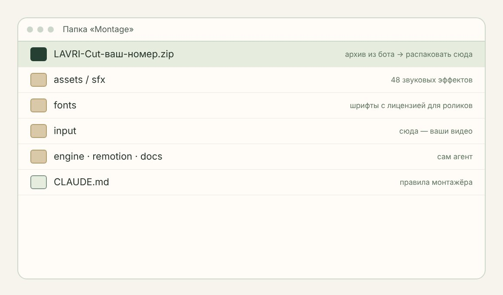
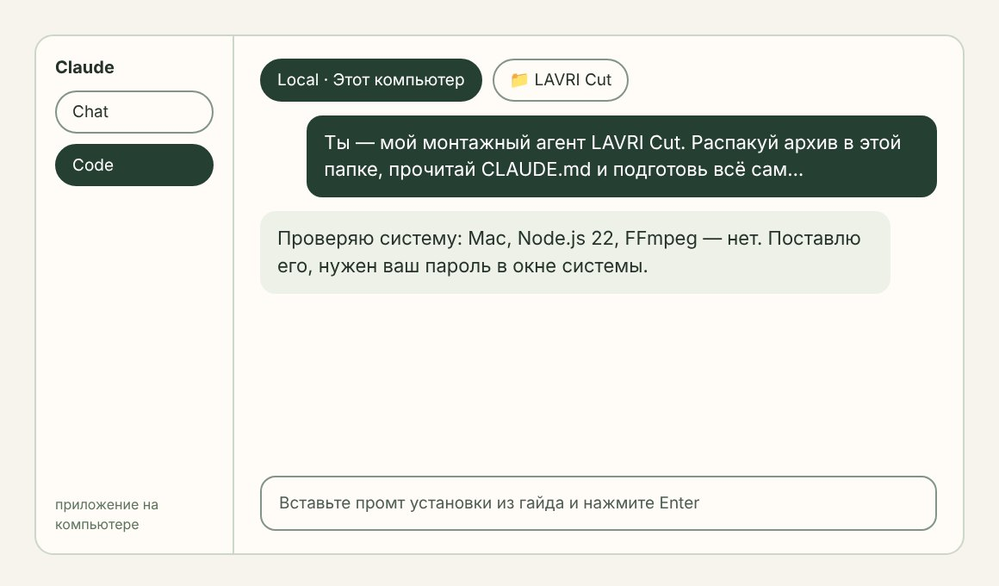
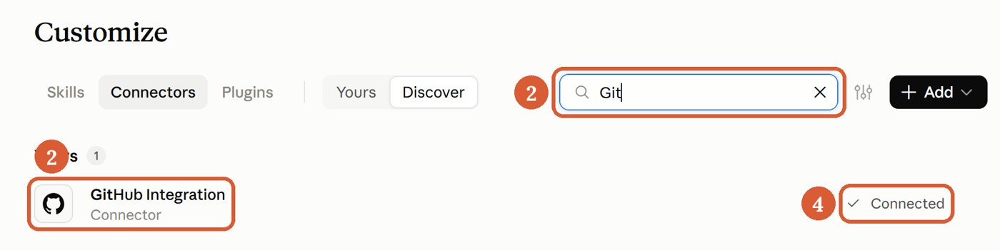
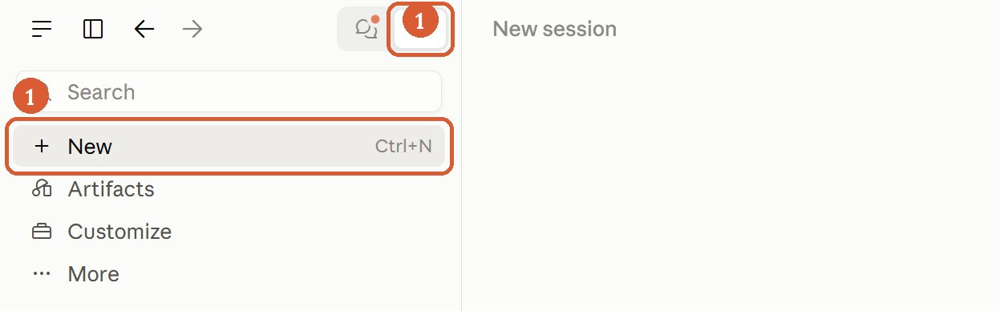
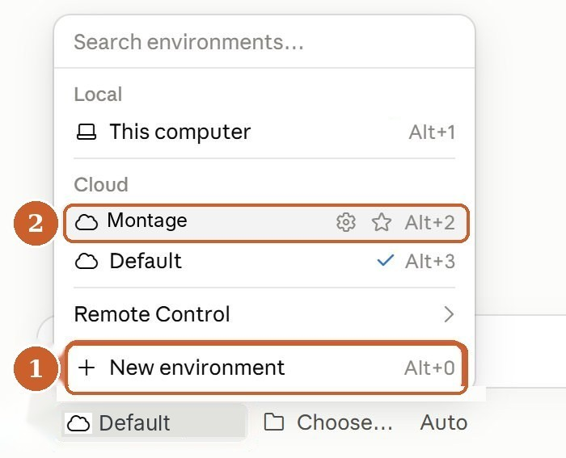
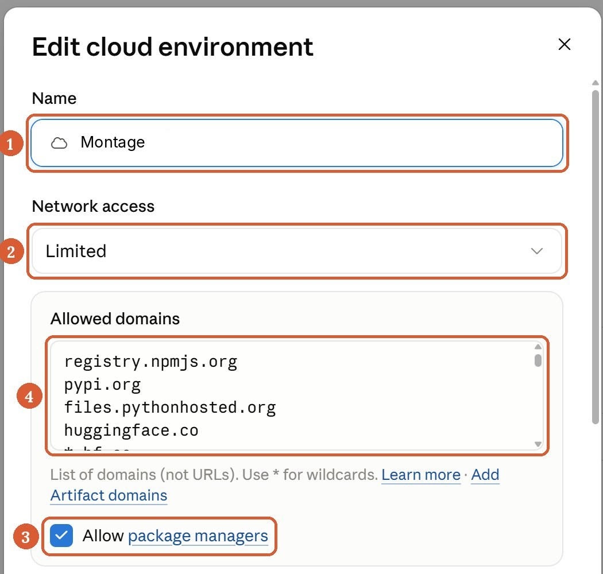
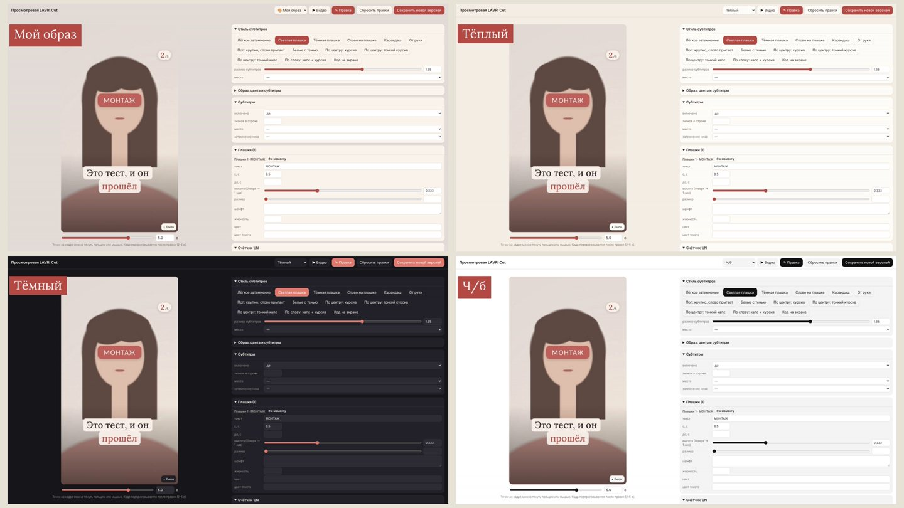
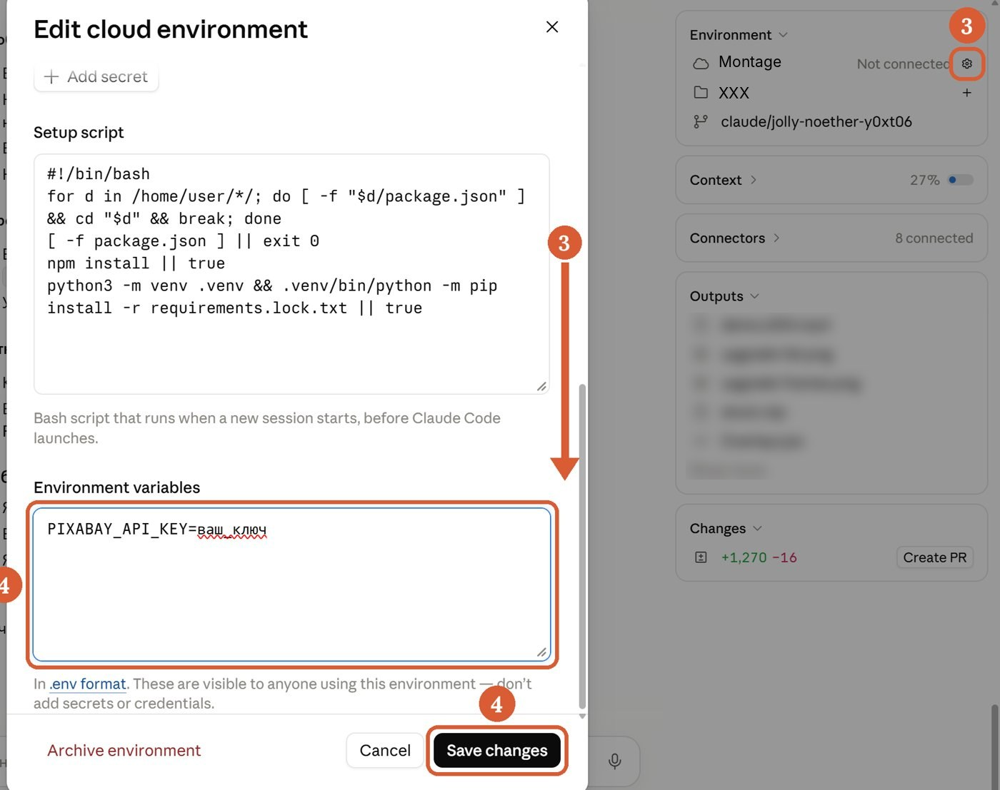
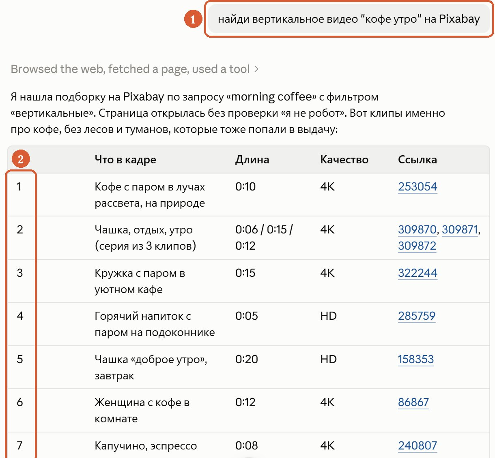
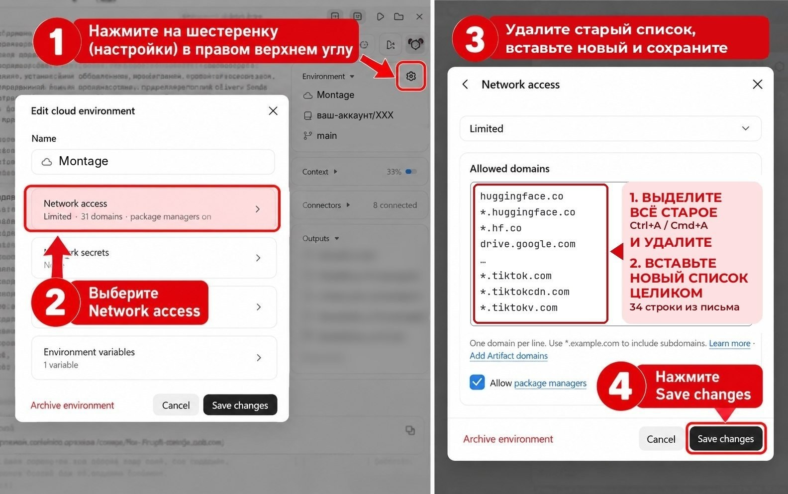

Монтажный агент LAVRI Cut
Свой монтажёр Reels в Claude
Готовый агент по авторской методике LAVRI: чистит шум и паузы, ставит субтитры, плашки, звуки и переходы, принимает правки словами или в редакторе. Решения всегда за вами.
Что внутри агента
Агент — не просто программа, а ваш сотрудник: учится на ваших роликах, запоминает правки, может освоить новый приём и сам разобрать свою ошибку. Как с ним говорить.
Где будет работать агент
На компьютере
- Агент живёт в папке на вашем Mac или Windows
- Видео, звуки, шрифты, готовые ролики — в папке, никуда не пропадают
- Не нужны GitHub и настройки среды
- Работа только с компьютера
В облаке
- Монтаж с любого устройства, в том числе с телефона
- Редактор открывается и на телефоне
- Агент и его память — в вашем личном репозитории GitHub
- Настройка сложнее: GitHub, среда, домены, коннекторы
В чём разница
| Что | Компьютер | Облако |
|---|---|---|
| Где работает агент | Папка на вашем компьютере | Виртуальный компьютер Claude + ваш личный репозиторий GitHub |
| Код агента, правила, навыки | В папке | В репозитории GitHub |
| Звуки и шрифты | В папке — не пропадают, можно дополнять | В репозитории — не пропадают, можно дополнять |
| Память агента: уроки, образ, брифы | В папке | В репозитории |
| Ваши исходники, музыка, готовые ролики | Лежат в папке, никуда не деваются | Временно — в рабочей сессии: исходники храните на Google Диске, готовое скачивайте сразу |
| С телефона | Нет | Да |
| Установка | Сами по инструкции, ~30 минут | По инструкции или на консультации |
Сомневаетесь — начните с компьютера: это проще всего. В облако агента можно перенести позже.
Mac или Windows
Установка на компьютер
Папка, архив, Claude, один промт. Программы агент поставит сам.
Что понадобится
- Компьютер Mac или Windows, около 5 ГБ свободного места.
- Приложение Claude для компьютера — claude.com/download, тариф Pro или выше (в нём есть Claude Code).
- Архив LAVRI Cut — получить.
Создайте папку и положите в неё архив
Создайте папку, например Montage в «Документах». Положите в неё архив. Распаковывать вручную не нужно — агент сделает это сам.

Откройте папку в Claude Code
- Откройте приложение Claude → Code.
- Выберите Local / «Этот компьютер» (не облако).
- Укажите вашу папку.

Скопируйте и отправьте промт установки
Агент распакует архив, проверит компьютер и поставит недостающие программы. Если нужно ваше подтверждение (пароль от компьютера вводится в окне системы, не в чате) — он скажет одной фразой.
Ты — мой монтажный агент LAVRI Cut. Работай только в этой папке. 1. Если здесь лежит zip-архив LAVRI Cut и он ещё не распакован — распакуй его содержимое прямо в эту папку (без лишней вложенной папки). Прочитай CLAUDE.md и работай по нему. 2. Подготовь всё сам: определи систему (Mac или Windows), проверь Node.js 20+, FFmpeg и Python 3. Чего нет — установи по подсказкам npm run doctor. Системную установку делай только после моего «да»; пароль я ввожу в окне системы, не в чате. Не обновляй систему и не подключай платные сервисы. 3. Выполни npm install, затем npm run setup:python, затем npm run doctor. 4. Запусти npm run demo. Покажи результат приёмки и открой демо-ролик (или скажи, где он лежит). Ничего не удаляй и не перезаписывай в папках input/ и assets/. Отвечай по-русски, коротко и без технических подробностей. Если нужно моё действие — назови одно конкретное действие и жди.
Посмотрите демо-ролик
Когда агент напишет «✅ Готово и проверено», откройте демо-ролик со звуком. Всё установлено. Первый запуск дольше — агент скачивает модель распознавания речи.

Установка — один раз. Дальше просто открывайте эту папку в Claude Code.
Компьютер + телефон
Установка в облако
Агент живёт в вашем личном репозитории GitHub и работает в облаке Claude — монтаж с телефона и с компьютера. Настройка сложнее: если не получится, настроим вместе на консультации.
Подготовка
- Приложение Claude на компьютере и телефоне — claude.com/download.
- Подписка Claude Pro или выше (в ней есть Claude Code).
- Аккаунт GitHub — github.com/signup.
- Google Диск на телефоне — загружать видео для монтажа.
- Аккаунт Higgsfield — по желанию, для генераций.
- Архив LAVRI Cut — получить.
Дальше в инструкции: XXX — название вашего репозитория (латиницей, например anna-montage), Montage — название вашей облачной среды. Можно назвать по-своему, главное — одинаково во всех шагах.
Репозиторий
- Откройте github.com/new.
- Repository name:
XXX— ваше название латиницей. - Visibility: Private. Add README: включите.
- Нажмите Create repository.

GitHub → Claude
- В claude.ai слева Customize → Connectors → Discover.
- Лупа → GitHub → GitHub Integration → Connect.
- В окне GitHub: Install → свой аккаунт → Only select repositories → ваш
XXX→ Install. - Готово, когда видно Connected.


Своя облачная среда
- В приложении Claude → Code → + New.
- Под полем ввода нажмите на среду → + New environment (на картинке — 1). Создаём новую облачную среду — не This computer и не Default. После сохранения она появится в списке Cloud — ваша Montage (на картинке — 2).


- Name:
Montage. Network access: Limited. - Поставьте галочку Allow package managers — без неё среда не заработает (ошибка 403).
- Allowed domains — список ниже.

Allowed domains
Вставьте список целиком. Звёздочку *. не убирайте — без неё не скачиваются ролики из Instagram, YouTube и TikTok.
huggingface.co *.huggingface.co *.hf.co drive.google.com drive.usercontent.google.com cloud-api.yandex.net downloader.disk.yandex.ru *.disk.yandex.net d8j0ntlcm91z4.cloudfront.net upload.higgsfield.ai pixabay.com cdn.pixabay.com mixkit.co assets.mixkit.co freesound.org cdn.freesound.org fonts.google.com fonts.googleapis.com fonts.gstatic.com fontspace.com *.fontspace.com i.pinimg.com instagram.com *.instagram.com *.cdninstagram.com *.fbcdn.net youtube.com *.youtube.com *.googlevideo.com *.ytimg.com tiktok.com *.tiktok.com *.tiktokcdn.com *.tiktokv.com
Зачем: распознавание речи (huggingface), Google и Яндекс Диск, Higgsfield — скачать генерации (cloudfront) и загрузить свои кадры (upload), стоки, музыка и звуки, шрифты, Pinterest, ролики конкурентов.
Скрипт установки
Прокрутите до Setup script и вставьте:
#!/bin/bash for d in /home/user/*/; do [ -f "$d/package.json" ] && cd "$d" && break done [ -f package.json ] || exit 0 npm install || true python3 -m venv .venv && \ .venv/bin/python -m pip install \ -r requirements.lock.txt || true
Нажмите Save changes. Проверьте ещё раз галочку Allow package managers.

Коннекторы
claude.ai → Customize → Connectors. Подключите до первого сообщения агенту — иначе нужна новая сессия.
- Google Drive — рекомендую: видео с телефона загружайте на Диск, агент заберёт даже большие.
- Higgsfield — по желанию. Нужен полный коннектор: + Add → Add custom connector → Name: Higgsfield, URL ниже → Add → Connect → войдите в свой аккаунт. Карточка «Higgsfield AI» (про Claude Motion) не подходит — в ней нет генерации.
https://mcp.higgsfield.ai/mcp
API-ключ не нужен. Генерации тратят кредиты Higgsfield — агент всегда называет цену и ждёт вашего «да».
Среда, репозиторий и архив
- Откройте новую сессию. Под полем ввода: среда → Montage (ваша новая), репозиторий → ваш
XXX.


- Прикрепите архив к сообщению и отправьте:
Распакуй архив в корень репозитория (содержимое папки внутри архива — она называется как мой репозиторий), сделай commit и push в main.
Установка и демо
Поставь зависимости: npm install и npm run setup:python. Затем запусти npm run doctor и npm run demo. Покажи результат приёмки.
Ждите «Готово и проверено». Это один раз — дальше всё ставится само в каждой новой сессии.
Ваш образ
Приложите примеры: скриншоты шрифтов и цветов, Reels, которые нравятся по монтажу, музыку, подборки Pinterest.
Прочитай CLAUDE.md. Давай настроим мой образ: вот мои примеры (Reels, шрифты, музыка, Pinterest) — или предложи 3 варианта.
Проверка коннекторов
Создайте на Google Диске папку «Монтаж» и загрузите короткий ролик.
Посмотри, какой последний ролик лежит в папке «Монтаж» на моём Google Диске, и скачай его.
Загрузи инструменты Higgsfield, проверь баланс и покажи мою последнюю генерацию — например, фото.
Агент назвал ролик, скачал его и показал генерацию — всё работает.
Облако — временное рабочее место. Свои исходники держите на Google Диске, готовый ролик скачивайте сразу: агент присылает его файлом в чат.
Как работать дальше: новая сессия на каждую задачу
Среда Montage и репозиторий XXX настраиваются один раз. Дальше каждая задача — новая сессия в той же среде и том же репозитории: агент тот же, его память и ваш образ — на месте.
- Claude → Code → + New.
- Под полем ввода: среда → Montage, репозиторий → XXX.
- Назовите сессию понятно: первая — «Монтажный агент», дальше — «Reels: тема ролика», «Конкуренты», «Обложки».
Новая сессия нужна и после любых изменений настроек среды (домены, ключ Pixabay, коннекторы) — старая их не увидит. Один ролик лучше вести в одной сессии от начала до финала.
На компьютере так же: новый чат в Code → «Этот компьютер» → та же папка агента.
Работа
Первый ролик
Агент предлагает — вы решаете. Исходное видео не меняется никогда.
Положите видео
В папке input создайте папку ролика латиницей, например reel-01, и положите туда видео. Картинки и музыку — в assets/reel-01.
В облаке проще так: загрузите видео на Google Диск в папку «Монтаж» и попросите агента забрать его оттуда.
Я положила видео в input/reel-01. Смонтируй вертикальный рилс по правилам CLAUDE.md. Тема: … Для кого: … Призыв в конце: … Сначала покажи бриф. Дальше останавливайся там, где нужно моё решение.
Где агент ждёт вашего решения
- Бриф: тема, хук, призыв, длина.
- Шум «до / после»: 12 секунд — слушаете и выбираете.
- Таблица «оставить / вырезать»: паузы, заминки, дубли.
- Превью: черновик с субтитрами, плашками и звуком — правки словами или в редакторе.
- Финал: только после вашего «да», затем приёмка и готовый файл.

Следующий ролик
Новая папка (reel-02, reel-03…) и та же фраза. Ваш образ и выводы прошлых роликов агент применит сам.
Правка пальцем и мышкой
Редактор
Напишите агенту «Открой редактор» — откроется кадр ролика и все элементы.
Двигать, менять, выбирать
- Двигать плашки и иконки прямо на кадре — пальцем или мышкой.
- Менять текст, размер и время появления.
- Выбирать стиль субтитров в один клик — 13 вариантов.
- Наклон горизонта, крупность спикера, счётчик.
- Вкладка «▶ Видео» — последнее превью; «◐ Было» — сравнить с исходником.
Кнопка «Сохранить новой версией» — и агент соберёт новое превью. Старые версии не пропадают.



Редактор можно настроить
Редактор — часть вашего агента, его можно менять словами. Опишите, что хотите видеть: какие поля и разделы, в каком порядке, как назвать, какие убрать, какие цвета и размер кнопок. Агент перестроит редактор и покажет, как стало.
Хочу, чтобы в редакторе первым шёл раздел «Субтитры», потом «Плашки». Раздел «Счётчик» убери — я им не пользуюсь. Добавь поле «цвет подложки субтитров». Кнопки сделай крупнее, чтобы удобно нажимать с телефона. Покажи, как стало.
Новые приёмы, которые вы добавляете в агента (новый вид субтитров, плашка, эффект), агент сам добавляет и в редактор.
Возможности
Звуки, шрифты, распаковка
48 звуковых эффектов
Переходы, щелчки, удары, реакции, печать — уже внутри агента. Он сам ставит звук на склейку и на появление плашки. Смысловые звуки (реакция, удар на цифре, нарастание) предлагает таблицей «время · звук · зачем» и ставит только после вашего «да».
Ваш стиль
Шрифты внутри — с открытой или бесплатной коммерческой лицензией: можно в рекламе и на заказ.
Давай настроим мой образ: вот мои примеры (Reels, шрифты, цвета, Pinterest) — или предложи 3 варианта.
Распаковка: ваша аудитория и ваша экспертность
Хотите, чтобы агент лучше понимал вашу целевую аудиторию и ваши экспертные знания? Возьмите 2 промта в подарок — сначала глубокое исследование ЦА, потом распаковка экспертности.
- Откройте обычный чат Claude (не Code) — так опрос не тратит лимиты монтажного агента. Можно пройти и прямо в агенте, но в чате выгоднее.
- Промт 1 — исследование ЦА. Вставьте промт, ответьте на вопросы. В конце попросите выгрузить результат файлом .md.
- Промт 2 — распаковка экспертности. То же самое: опрос → файл .md.
- Вернитесь к монтажному агенту, прикрепите оба файла и напишите: «Сохрани распаковку».
После этого агент лучше выстраивает хуки, предлагает идеи вирусных Reels и пишет подписи под вашу аудиторию и ваши экспертные знания — вашими словами, а не «как принято в нише». Промты есть и внутри агента: напишите ему «Распакуй меня».
Pixabay: фото, видео и музыка для вставок
Pixabay — бесплатная библиотека фото, видео и музыки: можно использовать в роликах и рекламе без указания автора. Агент сам найдёт подходящие вставки, покажет лист с номерами и скачает выбранные.
- pixabay.com → Join → вход через Google.
- pixabay.com/api/docs → раздел Parameters → строка key → скопируйте ваш ключ.
На компьютере
Напишите агенту: «Сохрани мой ключ Pixabay в файл .env» и вставьте ключ. Файл остаётся только у вас в папке.
В облаке
Шестерёнка у вашей среды → Environment variables → PIXABAY_API_KEY=ваш_ключ → Save changes → откройте новую сессию (в старой ключа не будет). В чат ключ не присылайте.

Найди вертикальное видео «кофе утро» на Pixabay.

Новые приёмы
Выходят обновлениями: архив и промт обновления. Ваши ролики, образ и правила сохраняются.
Идеи для роликов
Анализ конкурентов
Агент разбирает чужие Reels — хук, приёмы, почему залетел — и предлагает идеи и сценарий под вас. Чужой ролик — только для разбора, не для публикации.
Полный разбор ролика: таблица, хуки, почему залетел
Скопируйте ссылку на Reels, YouTube Shorts или TikTok («Поделиться → Копировать ссылку») или прикрепите видео. Вставьте промт, замените ССЫЛКА на свою. Агент сделает разбор и спросит: повторить ролик или адаптировать под вашу нишу — потом напишет сценарий.
Разбери этот ролик: ССЫЛКА (или прикреплённое видео). Ты — эксперт по Reels и вирусному контенту. Я присылаю референс (видео, ссылку или транскрипт). Работай в два ответа: 1) разбор + выбор режима, 2) сценарий. ОТВЕТ 1 — РАЗБОР (сразу, ничего не жди) КАК СМОТРЕТЬ — Если есть видео: смотри сам ролик, а не только текст. Кадры каждые 0,5 с, речь с тайм-кодами, текст на экране, смены локаций, графика, цвет, звук. — Если только транскрипт: так и скажи, что визуал не разобран. — Ничего не придумывай: чего не видно — пиши «не видно». РАЗБОР (строго по структуре, без воды) 1. ТАБЛИЦА С ТАЙМ-КОДАМИ Тайм-код | Что в кадре | Текст на экране / речь | Приём / функция фрагмента + отдельной строкой сквозные приёмы: субтитры, темп склеек, цвет, шрифты, звук. 2. ХУКИ — визуальный, текстовый, голосовой (и второй хук на 3–5 с, если есть). Для каждого: тип хука и почему держит первые 1–3 секунды. 3. ПОЧЕМУ ЗАЛЕТЕЛ (обязательно) — боль или желание зрителя; триггеры (любопытство, узнавание, спор, польза, эмоция, эстетика); за счёт чего досмотры, сохранения, репосты, комментарии. Если видны цифры (лайки, комментарии) — используй их. 4. КОНЦЕПЦИЯ — 1–2 фразы: формула, которую можно перенести в другую нишу. В конце ответа 1 спроси одним блоком: «Что делаем? А) ПОВТОР — такое же видео: те же структура, приёмы и монтаж, но с вами в кадре и вашими словами. Б) АДАПТАЦИЯ — формула ролика под вашу нишу, приёмы и визуал свои. Если Б — ответьте одним сообщением (можно частично): 1. Ниша и чем занимаетесь 2. Чем можете доказать: цифры, кейсы 3. Целевая аудитория: кто, боль, желание 4. Что продаёте / куда ведёте (лид-магнит, продукт) 5. Тон и образ: как говорите, шрифты, цвета 6. Что можете снять: локации, вторая камера, штатив 7. Ваши фишки и чего не хотите; уже использованные кодовые слова» Если что-то уже есть в моей распаковке и образе — не спрашивай. ОТВЕТ 2 — СЦЕНАРИЙ — Режим А (ПОВТОР): тот же порядок фрагментов и тайм-коды (±10 %), те же приёмы монтажа (склейки, текст на экране, звук); слова — свои, без копирования фраз референса; та же длина. — Режим Б (АДАПТАЦИЯ): формула из п. 4 под мою нишу; 3 варианта хука разных механик → рекомендуемый; визуал и приёмы — из моего образа. — Формат сценария (оба режима): таблица Тайм-код | Что в кадре (крупность, действие) | Реплика | Текст на экране | Звук/музыка; затем подпись к посту, CTA / кодовое слово и список съёмки.
Что залетело у конкурентов за 14 дней
Для Instagram этот анализ работает, когда подключён Metricool (бесплатный тариф подходит) и в нём добавлены конкуренты: Instagram без входа не показывает список роликов чужого профиля. YouTube и TikTok работают и без Metricool.
Вот мои конкуренты: ССЫЛКИ НА ПРОФИЛИ (YouTube, TikTok) и ссылки на свежие Reels из Instagram. Найди их ролики за последние 14 дней, покажи топ-3 по просмотрам и во сколько раз они выше обычных у автора. Разбери, почему залетели, и предложи 3 идеи роликов под меня.
Без Metricool — пришлите агенту ссылки на свежие Reels конкурентов. Свой пароль от Instagram агенту не давайте.
Сводка раз в неделю
Сохрани список моих конкурентов. Каждую неделю делай сводку: что у них залетело за 7 дней, почему, и 3 идеи для меня.
В облаке для этого нужны домены соцсетей со звёздочками (они уже в списке). Сводку удобно вести в отдельной сессии «Конкуренты».
Подключить Metricool и добавить конкурентов
Хотите разобраться, как подключить Metricool к Claude, добавить конкурентов и регулярно их анализировать — настроим вместе на консультации.
Забронировать консультацию →Правки
Как попросить правку
Своими словами — как удобно. Каждая правка — новая версия, к старой можно вернуться.
Три способа сказать, что поправить
- Просто словами, как есть. «Когда я говорю „в общем“, я запинаюсь — вырежи», «в конце слишком тихо», «плашка закрывает лицо». Время указывать не обязательно — агент найдёт сам по словам.
- Со временем в ролике — так агенту понятнее и быстрее: «на 0:06…», «с 0:12 до 0:15…».
- Скриншотом. Поставьте ролик на паузу в нужном месте, сделайте скриншот (чтобы было видно время) и пришлите агенту с пояснением: «вот здесь субтитры налезли на лицо».
Примеры правок
На 0:06 субтитры крупнее и выше. С 0:12 до 0:15 вставь мою картинку assets/reel-01/foto.jpg. Плашку «МОНТАЖ» убери, вместо неё счётчик 2/5. Музыка перекрывает голос на 0:20 — сделай тише. Верни фразу про цену целиком — склейка меняет смысл. Когда я говорю «в общем», я запинаюсь — вырежи эти места.
Каждый раз агент предлагает выбор: сказать правку словами — или открыть редактор и поправить самим.
Вернуть, как было
«Стоп. Верни, как было» — старые версии агент не затирает. Исходное видео не меняется никогда.
Помощь
Если не получилось
Сначала напишите агенту, на каком шаге остановились, и пришлите текст ошибки — попросите объяснить простыми словами.
Не программа, а сотрудник, который учится у вас
Агенту можно давать задачи, просить объяснить, учить новому и разбирать ошибки — как с живым помощником. Всё, о чём договорились, он записывает в свои правила и уроки и помнит в следующих роликах.
Объясни простыми словами, что не получилось и почему. Что ты уже проверил и какие есть варианты?
Ты умеешь делать ВОТ ТАКОЙ ПРИЁМ (пример: ссылка на Reels или скриншот)? Если нет — можешь научиться? Что тебе для этого нужно и сколько времени займёт?
Здесь была ошибка: ЧТО СЛУЧИЛОСЬ. Дай короткий отчёт: что сломалось, почему, как исправить. Исправь сам, проверь, что работает, и запиши, чтобы это не повторялось.
Запомни это правило для всех следующих роликов: ПРАВИЛО (например: субтитры у меня всегда белые, без плашки).
Вопрос — ответ: компьютер
Не вижу вкладку Code. Где найти Claude Code?
Claude Code есть на тарифе Pro и выше — на бесплатном его нет. Обновите приложение Claude для компьютера (claude.com/download). В приложении переключитесь с Chat на Code — см. схему в шаге 2.
Агент пишет, что не может читать файлы или запускать команды
Выбран не тот режим. Code → Local / «Этот компьютер» → папка агента → новый чат.
«FFmpeg не найден», «Python не найден» — какие-то программы не установлены
Напишите агенту «Установи сам». На Mac он поставит через Homebrew, на Windows — через winget. Если система попросит пароль — введите его в окне системы, не в чате.
Не скачивается модель распознавания речи
Проверьте интернет и напишите: «Выполни npm run setup:python ещё раз».
Что если закончатся лимиты Claude посреди монтажа?
Работа не потеряется: агент сохраняет каждый шаг, продолжите позже в той же папке. Агент уже настроен на экономию лимитов, но вы можете попросить его работать поэтапно и предупреждать заранее:
Работай поэтапно и экономно. Перед каждым большим шагом скажи, сколько примерно это займёт по времени и лимитам. Если лимиты подходят к концу — остановись на удобном месте, сохрани, что сделано, и напиши, с чего продолжить.
Вопрос — ответ: облако
Ошибка 403
Нет галочки Allow package managers в настройках среды → шаг 3.
Агент не видит Google Диск
Проверьте, что Google Drive подключён: claude.ai → Customize → Connectors. Если подключён — отключите и подключите заново, затем откройте новую сессию.
Агент не видит Higgsfield
Проверьте, что Higgsfield есть в Customize → Connectors и подключён к вашему аккаунту. После подключения — новая сессия.
Higgsfield: баланс виден, а генерации нет
Подключён урезанный коннектор «Higgsfield AI». Удалите его (⋯ → Remove) и добавьте вручную: + Add → Add custom connector, Name: Higgsfield, URL https://mcp.higgsfield.ai/mcp → Connect → вход в свой аккаунт. Затем в Tool permissions поставьте разрешения на все инструменты — появятся генерация фото и видео. Новая сессия.
Не загружаются файлы в Higgsfield или не скачиваются генерации и ролики
Не хватает домена в настройках среды. Замените список доменов целиком — шаг 3, домены — и откройте новую сессию.
Агент не видит репозиторий
В GitHub Integration должен быть выбран ваш XXX → шаг 2.
Нет «Готово и проверено» после установки
Повторите шаг 6. Не помогло — пришлите скриншот ответа агента.
Что если закончатся лимиты Claude?
Агент сохраняет работу в репозиторий — продолжите в новой сессии. Попросите работать экономно:
Работай поэтапно и экономно. Перед каждым большим шагом скажи, сколько примерно это займёт по времени и лимитам. Если лимиты подходят к концу — остановись на удобном месте, сохрани, что сделано, и напиши, с чего продолжить.
Доступ
Получить агента
Архив с агентом и эта инструкция — устанавливаете сами. Не разобрались или хотите облако под ключ — консультация.
Архив LAVRI Cut
- Монтажный агент целиком: правила, навыки, редактор, 48 звуков, шрифты
- Установка на компьютер или в облако по этой инструкции
- Именной экземпляр
Консультация
Настроим агента вместе на созвоне: облако с телефоном под ключ, домены, коннекторы, первый ролик.
Забронировать консультацию →Агент уже есть? — обновите его до новой версии.
Архив — именной экземпляр авторской методики LAVRI: передавать, копировать и перепродавать его третьим лицам нельзя.
В архиве — только авторский код и методика LAVRI. Агент работает на базе открытых программ (Remotion, FFmpeg, распознавание речи): они в архив не входят — при установке вы скачиваете их сами с официальных сайтов, по их лицензиям. Remotion бесплатен для частных лиц и компаний до 3 сотрудников; компании больше — оформляют лицензию Remotion сами.
Для тех, у кого агент уже есть
Обновить агента
Новые приёмы выходят обновлениями. Ваши ролики, образ, правила и уроки при обновлении сохраняются — агент встраивает только новое.
Получите архив обновления
Напишите мне, с какой версии обновляетесь (если не помните — имя вашего агента или репозитория). Пришлю именной архив обновления.
Получить архив для обновления →Обновите домены
Шестерёнка у вашей среды → Network access → выделите весь старый список и удалите → вставьте новый список доменов целиком → Save changes. Проверьте галочку Allow package managers.

На компьютере этот шаг не нужен.
Откройте агента
- Компьютер: Claude → Code → «Этот компьютер» → папка вашего агента. Положите архив обновления в эту папку.
- Облако: новая сессия → ваша среда (Montage) и ваш репозиторий (XXX). Архив прикрепите к сообщению.
Отправьте промт обновления
Обнови себя до новой версии из архива обновления (содержимое папки внутри архива) строго по файлу UPDATE.md. Сначала сделай точку возврата: если есть git — коммит и тег, если нет — скопируй всю папку целиком в «копия до обновления». Ничего из моих наработок не удаляй: ролики, бриф, образ, уроки, мои правила и мои правки в коде сохрани. Встрой только то, чего у меня ещё нет. Обязательно перенеси звуковые эффекты из assets/sfx/ и новые шрифты из fonts/. Затем по файлу CLEANUP.md убери следы прошлых версий — только то, что пришло с установкой или обновлением, мои папки не трогай. Подключения (коннекторы, ключи, настройки среды) не трогай. В конце запусти npm run doctor, проверь мои начатые ролики и npm run demo, сохрани изменения (в облаке — commit и push) и коротко расскажи, что нового. Если что-то сломается — верни всё как было.
Готово, когда агент написал «✅ Готово и проверено» и рассказал, что нового.
Вернуть, как было
Напишите «Верни всё как было до обновления» — агент восстановит точку возврата. Пришлите мне скриншот ошибки в @lavri_ai.